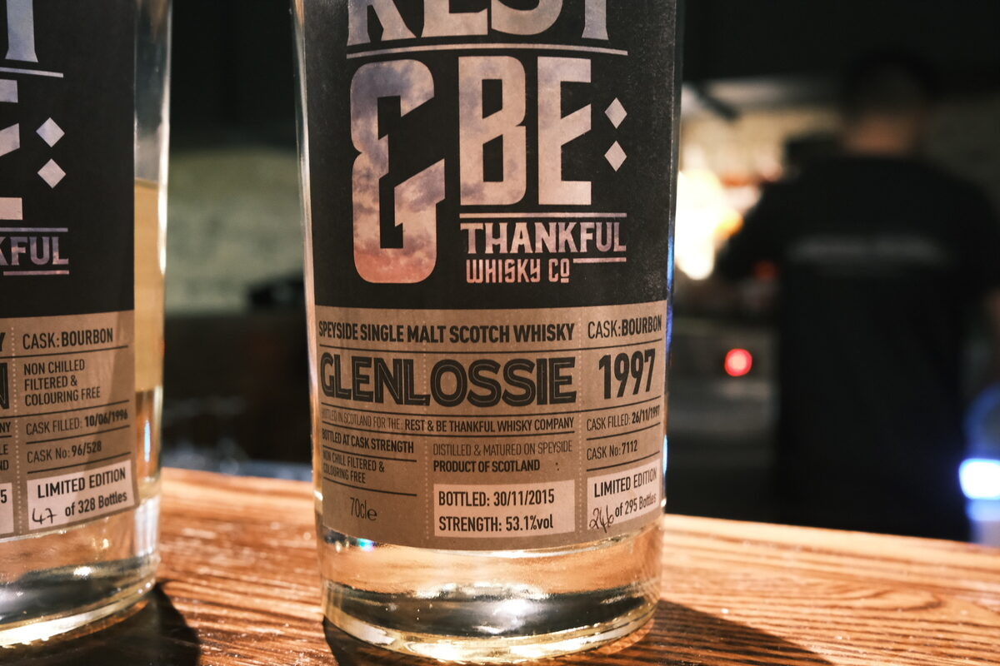

Glenlossie 1997 Rest & Be Thankful 18 years 53.1% (bourbon)
Another Glenlossie! Big fan of the Chorlton. This one’s a little younger.
Colour Straw.
Nose Caramel, bubblegum sweetness, and menthol. Like an assortment of sweets. Tropical fruits: mangoes and bananas. Vanilla and malt. Werther’s originals. Berry jams, lemon and sugar on pancakes. Tart orchard fruits, quite fresh. Citrus peels.
Palate Thick and creamy. Caramel and apple pie. Pear Danishes and brown sugar. A bit of cheesecake. Orchard fruits, oak, and cinnamon. Vanilla sugar. Macaroons. Malty! A herbaceous touch at the end.
Finish All sorts of chocolate: white milk, dark. Almonds and hazelnuts. Whipped cream and raisins. Long and warming, quite lovely.
Comments Another exbourbon dessert dram: rich and elegant sweetness. Strong execution. 86/100.

Posted by Dominic on 15 May 2021